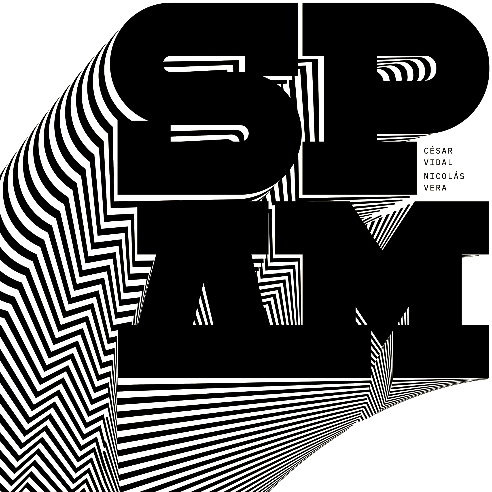

SPAM
SPAM is the second release by the duo of César Vidal and Chilean guitarist Nicolás Vera, recorded between January and February 2026. The EP features eight compositions and remote improvisations developed through an exploration of sound, texture, melody, and harmony.
Building on the acoustic foundation of their first release, NUBES, SPAM expands the duo’s sonic palette through electronic textures, analog effects, synthesizers, and subtle forms of sound processing. The material was recorded remotely, with Vera working from Bruma in Santiago, Chile, and Vidal recording in Amsterdam.
The EP was mixed by Nicolás Vera and marks the duo’s second collaboration with Chilean engineer Gonzalo “Chalo” González, a Latin Grammy nominee who has worked on numerous significant recordings within Chilean popular music.
SPAM was officially presented on April 24, 2026, as part of the clubnight programme of jazzahead! 2026 in Bremen, Germany.